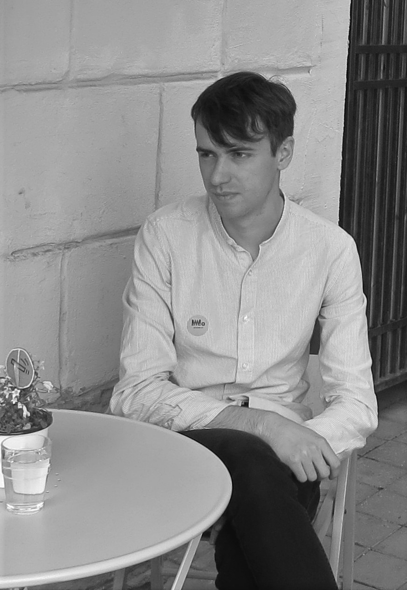

From January 2026, I will be a postdoc at Vilnius University working with Vidas Regelskis. Previously, I was a postdoc at the University of Luxembourg in Pieter Belmans' group and before that, a PhD student at the University of Edinburgh, supervised by Arend Bayer.
My academic CV can be found here, and my research statement is available upon request.
Address: Kabinetas B434, Nacionalinis Fizinių ir Technologijos Mokslų Centras, Saulėtekio al. 3, Vilnius, 10257, LithuaniaResearch interests
Algebraic geometry, derived categories of coherent sheaves, Bridgeland stability conditions, wall-crossing, moduli spaces.